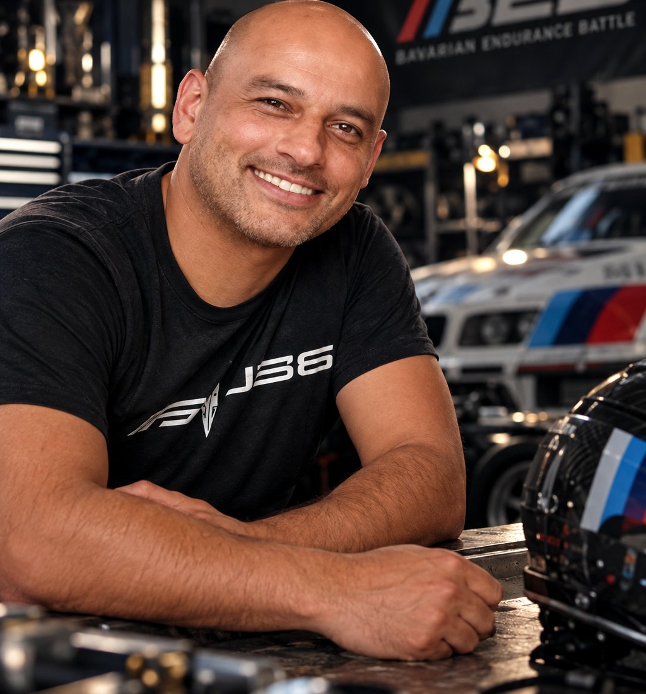
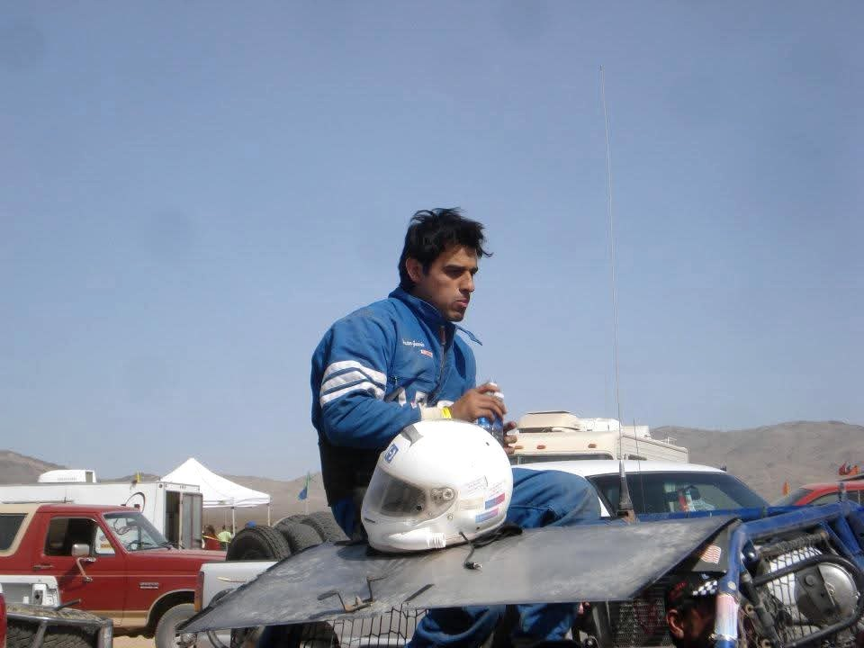
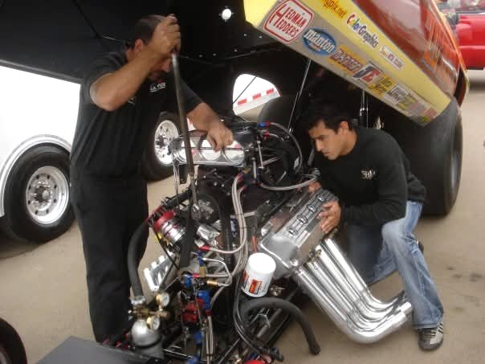
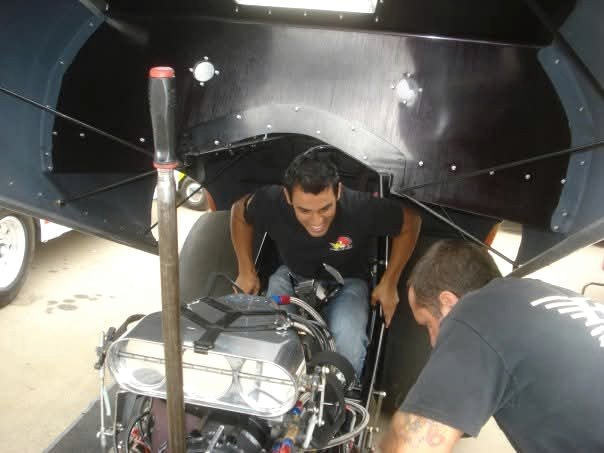
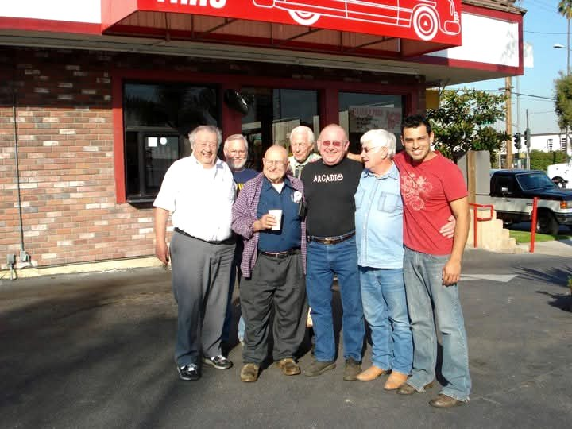
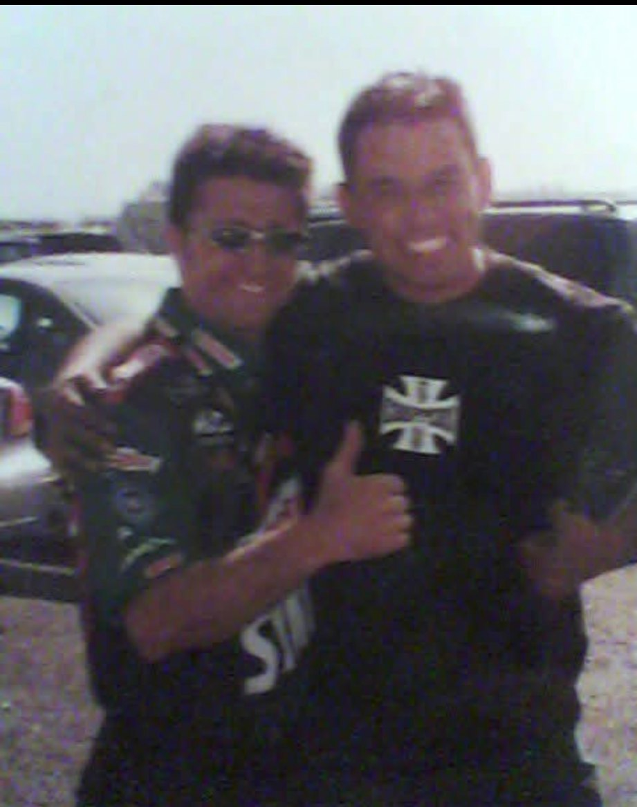
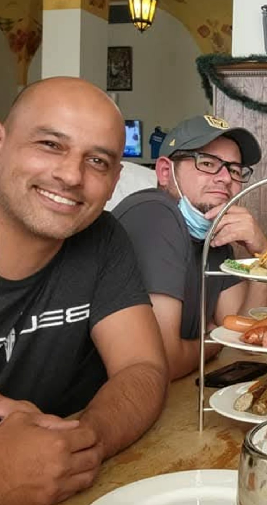
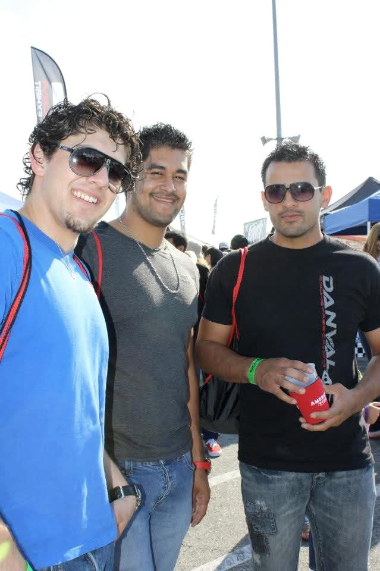

OUR STORY.
Built by Passion. Driven by Purpose. United by Motorsport.
Behind every race is a reason to begin. Behind every enduring association are the people and principles that keep it moving forward.
Daniel Valencia
Founder — Bavarian Endurance Battle

Before the Bavarian Endurance Battle existed, Daniel Valencia's journey into motorsport began the way many grassroots racing stories do: by volunteering at a race shop simply for the opportunity to be around race cars.
For Daniel, passion came before money, and the opportunity to learn was worth more than a paycheck. Long hours in the shop, hands-on experience, and learning from experienced builders became the foundation of his automotive career.

Over time, that passion developed into practical knowledge and specialized skills. Fabrication became one of his primary interests, leading him to work independently with automotive and motorsport shops across several disciplines.
His experience includes working on off-road racing vehicles, including those built for the legendary Baja 1000, as well as drag racing, drifting, road-course and track racing, automotive modifications, and vehicle restorations.


His appreciation for automotive engineering and craftsmanship also extends beyond full-size vehicles. Daniel is a nationally award-winning scale modeler, a discipline that reflects his attention to detail, creativity, patience, and dedication to recreating automotive history in miniature.
An entrepreneur as well as an automotive enthusiast, Daniel has pursued opportunities to build businesses while continuing to develop his passion for motorsport.

A Different Kind of Battle
The dream was simple: to one day own an automotive fabrication shop and build race cars.
By the end of 2015, that dream seemed within reach. Then life took an unexpected turn.
Daniel was diagnosed with cancer.
Almost overnight, his plans, projects, and ambitions were replaced by a fight for survival.
After months of treatment, he was declared cancer-free in 2016. But the battle was far from over. Severe pain eventually returned, followed by devastating news: the cancer had returned, stronger and more aggressive.
Multiple treatments followed before Daniel was referred to City of Hope, where a board of oncologists took over his case because of its rarity.
His treatment ultimately required two stem cell transplants and nearly three months confined to a hospital bed.
It was an extraordinary physical and emotional challenge, but the treatment ultimately saved his life.

The Road Back
Recovery meant rebuilding life from the ground up.
Plans had changed, opportunities had disappeared, and returning to normal life required patience, adaptation, and determination.
During the COVID years, Daniel helped a friend launch a healthcare company that eventually developed into a multimillion-dollar operation serving correctional facilities throughout California and later the Los Angeles Unified School District.
The experience strengthened his entrepreneurial background and demonstrated his ability to help develop an ambitious idea into a functioning business.
But despite the changes in his professional life, his passion for automobiles and motorsport never disappeared.
Eventually, Daniel returned to automotive fabrication, modification, and the world of racing, establishing his own automotive modification company and continuing to pursue the dream that had begun years earlier.
That journey ultimately led to the creation of the Bavarian Endurance Battle.

More Than a Race
Bavarian Endurance Battle brings together Daniel's appreciation for motorsport, automotive craftsmanship, entrepreneurship, and the grassroots racing community.
It is being developed as a BMW-focused racing association built around competition, preparation, accessibility, sportsmanship, and above all, safety.
Its purpose is to create opportunities for passionate drivers, builders, independent shops, established teams, and enthusiasts to become part of something meaningful, regardless of whether their journey began in a professional racing facility or a small garage.
For Daniel, the value of motorsport has never been measured solely by horsepower, expensive equipment, or trophies.
It is also measured by the people who build the cars, the teams who overcome adversity, the friendships created in the paddock, and the determination required to keep going when circumstances become difficult.

Daniel Valencia
Founder, Bavarian Endurance Battle
OUR MISSION
Built by Passion. Driven by Purpose. United by Motorsport.
Bavarian Endurance Battle was founded on a simple belief: motorsport should be about more than horsepower, expensive machinery, and the pursuit of victory. It should celebrate the people, the determination, the craftsmanship, and the passion that make racing possible.
Our mission is to establish a BMW-focused racing association that brings together drivers, builders, mechanics, independent shops, professional racing teams, and automotive enthusiasts through organized, competitive, and safety-conscious motorsport.
We believe that passion should never be measured by the size of someone's budget, the reputation of their shop, or the resources available to them. Whether a race car is built in a professional motorsport facility or assembled over countless evenings in a home garage, every participant deserves respect, a fair opportunity to compete, and an environment that values preparation, responsibility, and sportsmanship.
Safety is not simply a regulation within Bavarian Endurance Battle. It is the foundation upon which our association is being built.
We recognize that motorsport carries inherent risks that can never be completely eliminated. Our responsibility is to approach those risks with seriousness, establish and enforce meaningful technical and operational standards, encourage education and proper preparation, and continually work toward providing the safest racing environment reasonably possible.
We strive to create competition that is challenging but respectful, passionate but disciplined, and exciting without compromising our commitment to safety.
Beyond the racetrack, our mission is to strengthen the automotive community by creating opportunities for collaboration, mentorship, education, business partnerships, and lasting friendships. We want experienced racers to inspire newcomers, established shops to connect with independent builders, and generations of BMW enthusiasts to share the knowledge and traditions that keep motorsport alive.
We are equally committed to promoting responsible motorsport by encouraging automotive enthusiasts to pursue their passion in organized racing environments rather than through illegal street racing or activities that endanger the public.
As Bavarian Endurance Battle grows, our vision extends beyond a single event, a single racetrack, or a single state. We aspire to develop an enduring racing association that preserves BMW's motorsport heritage while creating new opportunities for the next generation of competitors.
We do not believe that every participant must become a champion to be part of something extraordinary.
Sometimes the greatest achievement is building the car. Sometimes it is making it to the starting grid. Sometimes it is overcoming a mechanical failure, helping a competitor, finishing a race, or discovering what a team can accomplish together.
And sometimes, the greatest victory is simply refusing to give up.
This is our mission. This is our commitment. This is the Bavarian Endurance Battle.
JOIN THE FOUNDING GRID →